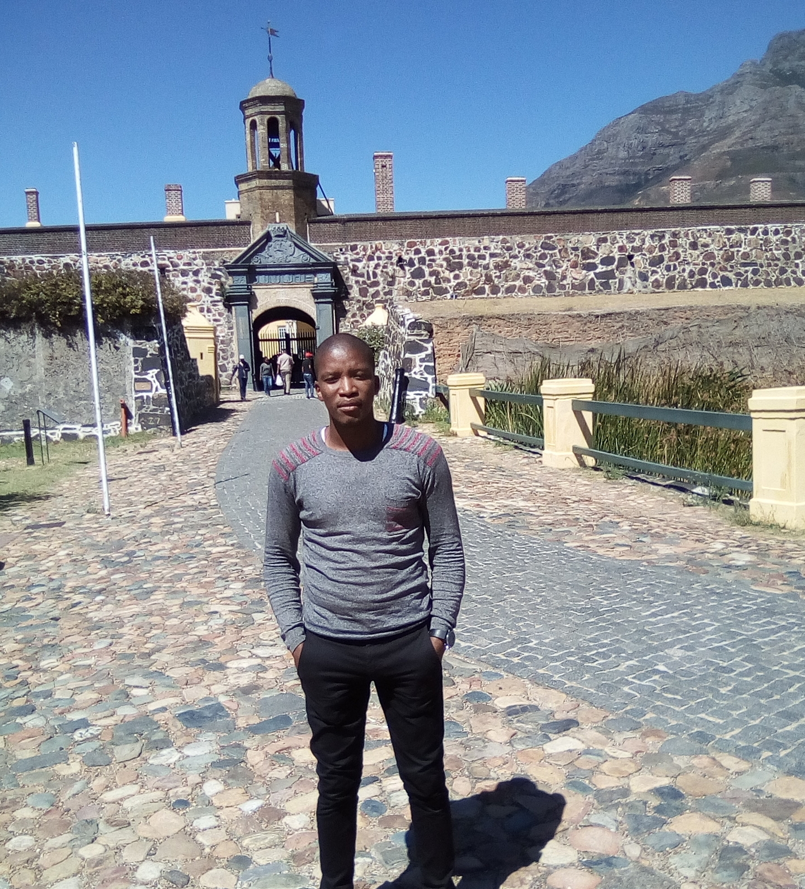

Lilo Chris Moykweni
.jpg)
Which City?
.jpg)
Dubai
Beacuse Dubai is one of the emirates that form the UAE (United Arab Emirates).
Perhaps the most famous of the seven regions,
and just because of two words; eccentricity and luxury.
In less than thirty years,
Dubai changed from being a little fishing village to
the famous awesome city that is today.
Languages
| English Phrase | Foriegn Phrase(Spanish) |
|---|---|
| hello how are you? | Ciao, come stai? |
| how was your visit in my country? | como estuvo tu visita en mi país? |
| I wish i can learn this langauge one day | Vorrei poter imparare questo langauge un giorno |
| Learn to love others like how you would love to be loved. | Impara ad amare gli altri come ti piacerebbe essere amato. |
Historic Places
City Hall
.jpg)
The area was named in 1867 as the Sixth Municipal District of Cape Town.
The area began to grow after the freeing of the slaves in 1833.
In 1901 large slum areas were burnt and razed after an outbreak of bubonic plague.
New buildings soon arose from the ashes and flourished.
Parliament Of RSA
.jpg)
This was composed of the House of Assembly (the lower house) and the Legislative Council (the upper house).
It dated back to the beginnings of Cape independence in 1853,
and was elected according to the multi-racial
1984 to 1994
A new Constitution, introduced in 1984,
re-enfranchised the Coloured population (women as well as men),
and enfranchised the Indian population.
Castle Of Good Hope
 The Castle of Good Hope is a bastion fort built in the 17th century in Cape Town,
South Africa.
Originally located on the coastline of Table Bay,
following land reclamation the fort is now located inland.